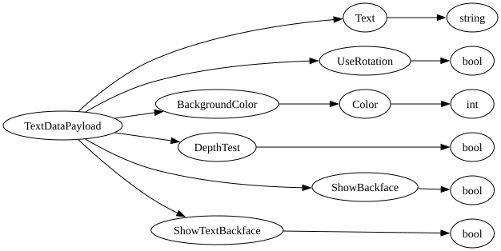

| Field Name | Field Type | Field Constraints | Field Notes |
|---|---|---|---|
| Text | string | Text (string) of the debug text shape. | |
| UseRotation | bool | Whether to use specified rotation, otherwise faces camera. | |
| BackgroundColor | Color | Color to draw background. | |
| DepthTest | bool | Whether other objects block seeing the text (false=like nametags,true=like signs). | |
| ShowBackface | bool | Whether the backface of the background should be rendered. | |
| ShowTextBackface | bool | Whether the backface of the text should be rendered. |